大正新脩大藏經 第20冊
No.1064 千手千眼觀世音菩薩大悲心陀羅尼 (1卷)
【唐 不空譯】
第 1 卷
No. 1064 [cf. Nos. 1056-1058, 1060-1063]
稽首觀音大悲主 願力洪深相好身
千臂莊嚴普護持 千眼光明遍觀照
真實語中宣密語 無為心內起悲心
速令滿足諸希求 永使滅除諸罪業
龍天眾聖同慈護 百千三昧頓熏修
受持身是光明幢 受持心是神通藏
洗滌塵勞願濟海 超證菩提方便門
我今稱誦誓歸依 所願從心悉圓滿
南無大悲觀世音 願我速知一切法
南無大悲觀世音 願我早得智慧眼
南無大悲觀世音 願我速度一切眾
南無大悲觀世音 願我早得善方便
南無大悲觀世音 願我速乘般若船
南無大悲觀世音 願我早得越苦海
南無大悲觀世音 願我速得戒定道
南無大悲觀世音 願我早登涅槃山
南無大悲觀世音 願我速會無為舍
南無大悲觀世音 願我早同法性身
我若向刀山 刀山自摧折
我若向火湯 火湯自消滅
我若向地獄 地獄自枯竭
我若向餓鬼 餓鬼自飽滿
我若向修羅 惡心自調伏
我若向畜生 自得大智慧
發是願已。至心稱念我之名字。亦應專念我本師阿彌陀如來。然後即當誦此陀羅尼神呪。一宿誦滿五遍。除滅身中百千萬億劫生死重罪。
南無阿彌陀如來 南無觀世音菩薩摩訶薩
觀世音菩薩復白佛言。世尊若諸人天。誦持大悲章句者。臨命終時。十方諸佛皆來授手。欲生何等佛土。隨願皆得往生。復白佛言。世尊若諸眾生。誦持大悲神呪墮三惡道者。我誓不成正覺。誦持大悲神呪者。若不生諸佛國者。我誓不成正覺。誦持大悲神呪者。若心不得無量三昧辨才者。我誓不成正覺。誦持大悲心神呪者。於現在生中。一切所求若不果遂者。不得名為大悲心陀羅尼也。唯除不善除不至誠。若諸女人厭賤女身。欲得成男子者。誦持大悲陀羅尼章句。若不轉女身成男子身者。我誓不成正覺。生少疑心者必不得果遂也。若諸眾生侵損常住飲食財物。千佛出世不通懺悔。縱能懺悔亦不除滅。今誦大悲神呪即得除滅。若侵損食用常住飲食財物。要對十方師懺謝。然始除滅。今誦大悲陀羅尼時。十方佛即來為作證明。一切罪障悉皆消滅。一切十惡五逆謗人謗法。破齊破戒破塔壞寺。偷僧祇物污淨梵行。如是等一切惡業重罪悉皆滅盡。唯除一事。於呪生疑者。乃至小罪輕業亦不得滅。何況重罪。雖不即滅重罪。猶能遠作菩提之因。復白佛言。世尊若諸人天誦持大悲心呪者。得十五種善生。不受十五種惡死也。其惡死者。一者不令其人飢餓困苦死。二者不為枷禁杖楚死。三者不為怨家讎對死。四者不為軍陳相殺死。五者不為虎狼惡獸殘害死。六者不為毒蛇蚖蠍所中死。七者不為水火焚漂死。八者不為毒藥所中死。九者不為蟲毒所害死。十者不為狂亂失念死。十一者不為山樹崖岸墜落死。十二者不為惡人厭魅死。十三者不為邪神惡鬼得便死。十四者不為惡病纏身死。十五者不為非分自害死。誦持大悲神呪者。不被如是十五種惡死也。得十五種善生者。一者所生之處常逢善王。二者常生善國。三者常值好時。四者常逢善友。五者身根常得具足。六者道心純熟。七者不犯禁戒。八者所有眷屬恩義和順。九者資具財食常得豐足。十者恒得他人恭敬扶接。十一者所有財寶無他劫奪。十二者意欲所求皆悉稱遂。十三者龍天善神恒常擁衛。十四者所生之處見佛聞法。十五者所聞正法悟甚深義。若有誦持大悲心陀羅尼者。得如是等十五種善生也。一切天人應常誦持勿生懈怠。觀世音菩薩說是語已。於眾會前合掌正住。於諸眾生起大悲心。開顏含笑。即說如是廣大圓滿無礙大悲心陀羅尼神妙章句。陀羅尼曰。
南無喝囉怛娜哆囉夜[口*耶](此是觀世音菩薩本身。大須慈悲用心讀誦。勿高聲神性急。一)南無阿唎[口*耶](此是如意輪菩薩本身。到此須存心。二)婆盧羯帝爍鉢囉[口*耶](此是持鉢觀世音菩薩本身。若欲取舍利骨。誦此存想菩薩持鉢。三)菩提薩埵婆[口*耶](此是不空羂索菩薩。押大兵。四)摩訶薩埵婆[口*耶](此是菩薩種子。自誦呪之本身也。五)摩訶迦盧尼迦[口*耶](此是馬鳴菩薩本身。手把鈸折羅即是。六)唵(此唵是諸鬼神合掌聽誦呪也。七)薩皤囉罰曳(此四大天王之本身。降魔。八)數怛那怛寫(此是四大天王部落鬼神名字也。九)南無悉吉栗埵伊蒙阿唎[口*耶](此是龍樹菩薩本身。大須用心誦此勿疎失菩薩性急。十)婆盧吉帝室佛羅[口*楞]馱婆(此是圓滿報身盧舍那佛。十一)南無那囉謹墀(此是清淨法身毘盧遮那佛本身。大須用心。十二)醯唎摩訶皤哆沙咩(羊鳴。此是羊頭神王。共諸天魔為眷屬。十三)薩婆阿他豆輸朋(此是甘露菩薩。亦是觀世音菩薩部落以為眷屬也。十四)阿逝孕(此是飛騰夜叉天王巡歷四方察其是非也。十五)薩婆薩哆那摩婆伽(此是婆加帝神王。其形黑大。以豹皮為裩。手把鐵刃。十六)摩罰恃豆(此是軍吒利菩薩本身。把鐵輪并把索。而有三眼是也。十七)怛姪他(此是劍語。十八)唵阿婆盧醯(十九)盧迦帝(此是大梵天王本身也。神仙為部落。二十)迦羅帝(此是帝神長大黑色也。二十一)夷醯唎(此是三十三天。是摩醯首羅天神領天兵青色。二十二)摩訶菩提薩埵(此是實心更無雜亂心。即名薩埵。二十三)薩婆薩婆(此是香積菩薩。押五方鬼兵以為侍從不可思議。二十四)摩羅摩羅(此是菩薩相罰語即為齊也。二十五)摩醯摩醯唎馱孕(同前。二十六)俱盧俱盧羯懞(此是空身菩薩。押天大將軍領二十萬億天兵也。二十七)度盧度盧罰闍耶帝(此是嚴峻菩薩。押孔雀王蠻兵也。二十八)摩訶罰闍耶帝(同前。二十九)陀羅陀羅(此是觀世音菩薩。大丈夫身即是也。三十)地唎尼(此是師子王。兵驗讀誦。三十一)室佛羅娜(此是霹靂菩薩。降伏諸魔眷屬。三十二)遮囉遮囉(此是摧碎菩薩本身。手把金輪。三十三)摩摩(某甲受持)罰摩囉(此是大降魔金剛本身。把金輪。三十四)穆帝[口*(隸-木+上)](此是諸佛合掌聽誦真言。三十五)伊醯伊醯(此是魔醯首羅天王。三十六)室那室那(同前。三十七)阿囉嘇佛囉舍利(此是觀世音菩薩。把脾弩弓箭也。三十八)罰沙罰嘇(同前。三十九)佛囉舍耶(此是阿彌陀佛本身。觀世音菩薩師主。四十)呼盧呼盧摩羅(此是八部鬼神王。四十一)呼盧呼盧醯唎(同前。四十二)娑囉娑囉(此是五濁惡世也。四十三)悉唎悉唎(此是觀世音菩薩。利益一切眾生。不可思議。四十四)蘇嚧蘇嚧(此是諸佛樹葉落□。四十五)菩提夜菩提夜(此是觀世音菩薩。結緣眾生。四十六)菩馱夜菩馱．夜(此是阿難本身也。四十七)彌帝唎夜(此是大車菩薩。手把金刀。四十八)那囉謹墀(此是龍樹菩薩手把金刀之處。四十九)他唎瑟尼那(此是寶幢菩薩手持鐵叉是也。五十)波夜摩那(此是寶金光幢菩薩鉢折羅杵。五十一)娑婆訶(去聲。五十二)悉陀夜(此是達一切法門。五十三)娑婆訶(去聲。五十四)摩訶悉陀夜(此是放光菩薩手把赤幡。五十五)娑婆訶(去聲。五十六)悉陀喻藝(此諸天菩薩盡悉以集。手把金刀。五十七)室皤囉夜(是安息香也。五十八)娑婆訶(去聲。五十九)那羅謹墀(山海惠菩薩本身。手把金劍。六十)娑婆訶(去聲。六十一)摩羅那羅(此是寶即王菩薩手把金斧。六十二)娑婆訶(去聲。六十三)悉囉僧阿穆佉耶(此是藥王菩薩本身。行療諸病。六十四)娑婆訶(去聲。六十五)娑婆摩訶阿悉陀[口*耶](此是藥上菩薩本身。行療諸病。六十六)娑婆訶(去聲。六十七)者吉囉阿悉陀夜(同聲。六十八)娑婆訶(去聲。六十九)波陀摩羯悉哆夜(同聲。七十)娑婆訶(去聲。七十一)那囉謹墀皤伽囉[口*耶](七十二)娑婆訶(七十三)摩婆利勝羯囉夜(七十四)娑婆訶(七十五)南無喝囉怛那哆囉夜耶(七十六)南無阿唎[口*耶](七十七)婆盧吉帝(七十八)爍皤囉夜(七十九)娑婆訶(八十)悉殿都(八十一)漫哆羅(八十二)跋馱耶(八十三)娑婆訶(八十四)
（四十一）若為一切飢渴有情及諸餓鬼得清涼者。當於甘露手真言。
唵(引)素嚕素嚕鉢羅(二合)素嚕鉢羅(二合)素嚕素嚕素嚕野薩嚩(二合)賀
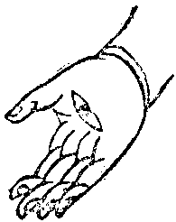（七）若為一切時一切處怖畏不安者。當於施無畏手。真言。
唵(引)阿左尾[口*(隸-木+士)]薩嚩(二合)賀
唵(引)迦摩攞薩嚩(二合)賀
唵(引)蘇悉地迦哩嚩哩哆喃哆目哆曳嚩日囉(二合)嚩日囉(二合)畔馱賀曩賀曩吽泮吒
唵(引)揭[口*(隸-木+士)](二合)糝滿焰薩嚩(二合)賀
唵(引)藥葛釤曩那野戰捺羅(二合)達耨播哩野(二合)跛舍跛舍薩嚩(二合)賀
唵(引)味囉野味囉野薩嚩(二合)賀
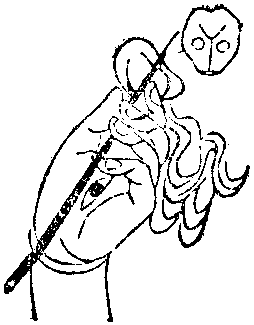（二十八）若為使令一切鬼神不相違拒者。當於髑髏寶杖手。真言。
曩謨(引)囉怛曩(二合)怛囉(二合)夜野唵(引)阿那婆帝尼惹曳悉地悉馱[口*栗]簪薩嚩(二合)賀
唵(引)嚩日囉(二合)祇儜鉢囉(二合)儞鉢多野薩嚩(二合)賀
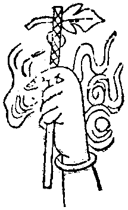（三十二）若為善神龍王常來擁護者。當於俱尸鐵鉤手。真言。
唵(引)阿嗗嚕(二合)哆囉迦囉毘沙曳曩謨(引)薩嚩(二合)賀
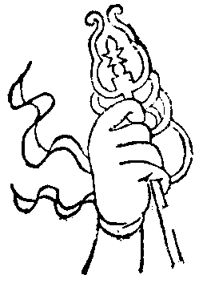（三十三）若為慈悲覆護一切眾生者。當於錫杖手。真言。
唵(引)那[口*栗]智那[口*栗]智那[口*栗]吒鉢底那[口*栗]帝娜夜鉢儜吽泮吒
唵(引)嚩日囉(二合)味囉野薩嚩(二合)賀
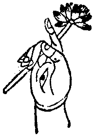（二十一）若為面見一切十方諸佛者。當於紫蓮華手。真言。
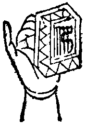（三十一）若為成就口辯言辭巧妙者。當於寶印手。真言。
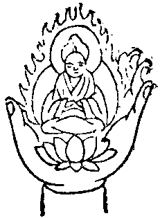（三十九）若為十方諸佛速來摩頂授記者。當於頂上化佛手。真言。
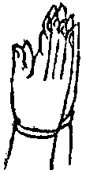（三十四）若為令一切鬼神龍蛇虎狼師子人及非人常相恭敬愛念者。當於合掌手。真言。
唵(引)尾薩囉尾薩囉吽泮吒
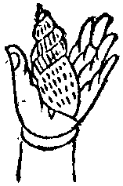（二十七）若為呼召一切諸天善神者。當於寶螺手。真言。
唵(引)商揭[口*(隸-木+士)](二合)摩賀糝滿焰薩嚩(二合)賀
唵(引)鉢娜[牟*含]味囉野薩嚩(二合)賀
曩謨(引)鉢娜[牟*含]播拏曳唵(引)阿密[口*栗]擔儼陛室哩曳寶哩[鹵*占]哩儜薩嚩(二合)賀
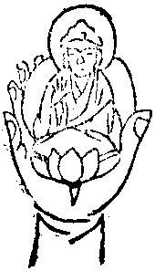（三十五）若為生生之處不離諸佛邊者。當於化佛手。真言。
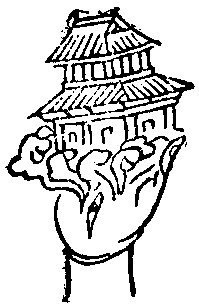（三十六）若為生生世世常在佛宮殿中不處胎藏中受身者。當於化宮殿手。真言。
唵(引)微薩囉微薩囉吽泮吒
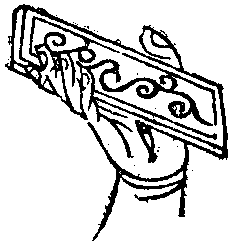（三十七）若為聰明多聞廣學不忘者。當於寶經手。真言。
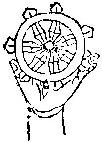（三十八）若為從今身至佛身菩提心當不退轉者。當於不退轉金輪手。真言。
觀世音菩薩說此呪已。大地六變震動。天雨寶華繽紛而下。十方諸佛悉皆歡喜。天魔外道恐怖毛竪。一切眾會皆獲果證。或得須陀洹果。或得斯陀含果。或得阿那含果。或得阿羅漢果者。或得一地二地三四五地乃至十地者。無量眾生發菩提心。
大悲心陀羅尼經并呪(終)